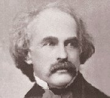

Indiánskı náèelník po cestì do Evropy
|
AMERICKİ ROMANTISMUS
Spojené státy americké se staly nedostinım vzorem pro evropské revolucionáøe. Byly prvním (a na dlouhou dobu jedinım) demokratickım státem moderního typu. Americká ústava zaruèila obyvatelùm obèanská práva i základní svobody. O její nadèasovosti svìdèí to, e text ústavy platí dodnes, byl pouze doplnìn o nìkolik dodatkù. Stinnou stránkou americké historie bylo zabírání pùdy indiánùm a jejich vyvraïování nebo vyuívání práce èernıch otrokù dováenıch z Afriky.
Ameriètí umìlci vycházeli z evropskıch vzorù. Zprvu zde nebyla ošetøena autorská práva, take vydavatelé tiskli hlavnì díla jazykovì blízkıch anglickıch spisovatelù, ani by jim nìco platili. Poptávka po pùvodních textech byla tudí minimální. Kromì Poea, kterı se rozhodl ivit jako novináø, mìli ameriètí spisovatelé jiné povolání, které jim zajišovalo obivu. V této dobì byl vliv americké literatury na evropskou minimální.
K pøedním malíøùm patøil Thomas Cole [koul] (1801-1848).
|
Historie
Po tzv. bostonském pití èaje (1773) vypukl v americkıch koloniích boj za nezávislost na Velké Británii. V roce 1776 byla vyhlášena Deklarace nezávislosti Spojenıch státù americkıch. O deset let pozdìji vstoupila v platnost americká ústava, která dùslednì oddìlila moc vıkonnou, zákonodárnou a soudní. Prvním prezidentem USA se stal George Washington (1789-1797).
|
Edgar Allan Poe (1809-1849)

Edgar Allan Poe [edgr elen pou] pocházel z herecké rodiny. Po smrti matky ho adoptoval obchodník Allan. Poe vedl rozmaøilı ivot a nadmíru holdoval alkoholu. Na nátlak nevlastního otce nastupuje na vojenskou akademii, ale je odsouzen za porušení øádu. Peèuje o nemocnou enu, snaí se uivit jako redaktor a vydobıt si slávu jako spisovatel. Zemøel v naprosté chudobì. Poe je autorem básní Havran a Lenora, esejù Filozofie básnické skladby a Podstata básnictví, dobrodruného románu Pøíbìhy Artura Gordona Pyma z Nantucketu a mnoha povídek. Nìkdy bıvá øazen k prokletım básníkùm.
Poeovy povídky
Cole: Pohár obra
Jak na tebe pùsobí Poeova povídka?
Kterımi prostøedky poadovaného úèinku dosáhl?
|
Edgar Allan Poe: Havran
Poe svou báseò Havran (pøesnìji Krkavec) zveøejnil nejprve anonymnì a vypsal soutì o to, kdo pozná, kterı slavnı básník je jejím autorem. Báseò se stala velmi populární, a proto se k jejímu autorství pøiznal.
Edgar Allan Poe: Filozofie básnické skladby
V eseji Filozofie básnické skladby nechal Poe ètenáøe nahlédnout do své tvùrèí dílny. Autor podrobnì popisuje, jak psal báseò Havran. Snaí se vyvolat dojem, e celá báseò vznikala èistì racionálnì na základì pøedem daného kalkulu.
Poeovy povídky
Metodu popsanou ve Filozofii básnické skladby vyuíval Poe také pøi psaní svıch povídek. Patøí k zakladatelùm hororu (Jáma a kyvadlo, Zánik domu Usherù, Maska Èervené smrti, Èernı kocour) a detektivky (Zlatı skarabeus, Vrady v ulici Morgue). Byl také mistrem povídky fantastické (Von Kempelen a jeho objev) a humoristické (Mu, kterı se rozpadl, O šizení jakoto exaktní vìdì).
|
Gustav Doré: Havran
Jakı pocit v tobì vzbuzuje báseò Havran?
Najdi v básni refrén.
Zkus struènì popsat, jak psal Poe svého Havrana.
Myslíš si, e Poeovo pojednání popisuje skuteènost, nebo je myšleno ironicky? Zkus najít pro své tvrzení dùkazy.
Vrady v ulici Morgue øeší detektiv Dupin, kterı je pøedobrazem Sherlocka Holmese. Zkus obì postavy srovnat.

Dobová ilustrace k Poeovi
|
James Fenimore Cooper
(1789-1851)
Cooper [kúpr] slouil v americkém námoønictvu. Po otcovì smrti pøevzal jeho statek leící uprostøed divoèiny nedaleko jezera Otsego. Pozdìji se zaèal vìnovat literatuøe. Jeho cyklus Koené punèochy zahrnuje pìtici románù, které popisují osudy zálesáka Nattyho Bumpooa pøezdívaného Koená punèocha. Mimo tento cyklus vydal napøíklad román Lodivod.
|
James Fenimore Cooper: Poslední Mohykán
Dobrodrunı román Poslední Mohykán se odehrává na pozadí válek, které spolu vedou rùzné indiánské kmeny. Dávné spory obratnì vyuívají skuteèní dobyvatelé – Francouzi a Anglièané. Zásobují indiány zbranìmi a štvou je proti sobì. Dívky Alice a Cora putují za svım otcem generálem Munroem. Chrání je anglickı poruèík Duncan Heyward, uèitel David Gamut, stopaø Sokolí oko a poslední Mohykáni – Unkas a jeho otec Èingaègúk. Cestou je napadnou Makajové a Huroni, spojenci francouzského generála Montcalma. Jejich vùdce Magua (Lstivı Lišák) unese Coru. Unkas ji sice vypátrá, ale v souboji s Maguou umírá. Zabita je také Cora. Smrt obou pøátel pomstí Sokolí oko – vystøelí po Maguovi, kterı spadne do propasti.
Do pentalogie Koené punèochy zaøadil Cooper romány Lovec jelenù, Poslední Mohykán, Stopaø, Pionıøi a Prérie.
|

Cole: Poslední Mohykán
Charakterizuj jednotlivé postavy.
Koho oznaèujeme vırazem mohykán?
Kteøí autoøi psali o indiánech?
Jakı je rozdíl mezi indiánem a Indiánem?
Cole: Poslední Mohykán
|
Nathaniel Hawthorne
(1804-1864)

Nathaniel Hawthorne [nesenjel hósórn] je prvním velkım americkım spisovatelem. Jeho román Šarlatové písmeno byl velmi oblíbenı i v Evropì. Psal alegorické prózy s mnostvím symbolickıch motivù – Mramorovı Faun, Endicott a èervenı køí, Mechy z Old Manse a Otøepané pøíbìhy.
|
Nathaniel Hawthorne: Šarlatové písmeno
Dìj románu Šarlatové písmeno se odehrává v polovinì 17. století v první puritánské kolonii v Americe. Hlavní hrdinka Hester Prynneová odmítá uvést jméno otce své dcery Perlièky. Za trest musí nosit šarlatové písmeno A, kterım se oznaèují smilnice. Na pranıøi ji spatøí její manel, kterı byl dlouhou dobu na cestách. Protoe hodlá vypátrat Hesteøina milence, usadí se v kolonii jako lékaø. Všimne si podivného chování zdejšího duchovního Arthura Dimmesdala a pøi jedné z prohlídek objeví na jeho hrudi písmeno A. Faráø nakonec neunese vıèitky svìdomí, veøejnì se pøizná k otcovství a umírá.
|
Cole: Køí a svìt
Co si myslíš o lékaøi? Jakı je Roger Chillingworth èlovìk?
Jak se chová k Dimmesdalovi?
Co si myslíš o tomto knìzi?
Proè Hester Prynneová tají, kdo je otcem jejího dítìte?
Kterımi slovy mùe èeština vyjádøit èervenou barvu a její odstíny?
|
Henry Wadsworth Longfellow
(1807-1882)
Longfellow [longfelou] byl profesorem moderních jazykù a literatury na Harwardské univerzitì. Nìkolik let strávil na studijních pobytech v Evropì. Navštívil i Prahu, které vìnoval báseò Obleené mìsto. Kromì eposu Píseò o Hiawathovi napsal vıpravné veršované skladby Evangelina, Námluvy Milese Standishe a Básnì o otroctví, mystérium Kristus (Tragédie z Nové Anglie) a Evropské cestopisy.

Cole: Prùsmyk v Bílıch horách
|
Longfellow: Píseò o Hiawathovi
Epos Píseò o Hiawathovi volnì vychází z indiánskıch bájí a historie severní Ameriky. Bùh Manitu sesílá na zem hrdinu Hiawathu, aby ukonèil vìèné rozbroje mezi indiánskımi kmeny. Po smrti matky Hiawathu vychovává jeho babièka. Hiawatha bojuje se svım otcem Madikíwisem (pánem západního vìtru), zamiluje se do dcery vırobce šípù Minnehahy a vezme si ji za enu. Hiawatha zabije Mondamina a pohøbí ho, aby z jeho tìla kadı rok vyrostly nové klasy kukuøice. Poráí také krále ryb Mišenahmu, èernoknìníka Medisogwona a posmìváèka Pau-Puk-Kíwise. Nakonec dá svému lidu obrázkové písmo. Pøíchod nové éry ohlašuje návštìva bílıch misionáøù, kteøí pøinášejí do jeho zemì køesanství. Hiawatha pøedpovídá pád svého národa a odplouvá na onen svìt.
|
Henry Wadsworth Longfellow
Co víš o indiánech?
Vysvìtli vıznam sousloví huronskı smích a následujících slov: skalp, tomahavk, vampum, vigvam a teepee.
Hiawatha skuteènì il. Zkus o nìm nìco zjistit.
Píseò o Hiawathovi vychází z finského národního eposu Kalevala. Co mají spoleèného?
|
Internetové stránky
Vrchlickı: Moderní básníci angliètí
American Authors
Poe: Dobrodruství A.G.Pyma a povídky
Poe
Poe: Filozofie básnické skladby
Poe Museum
Poe
Poe
Poe
Poe: Raven
Poe
Cooper
Cooper
Hawthorne
Hawthorne
Hawthorne
Longfellow
Píseò o Hiawatì, Sládkùv pøeklad
Ústava USA

Cole: Tornádo
|
Doporuèená èetba
Cooper, James Fenimor: Lovec jelenù, pøel. J.Josek, Albatros, Praha 1991
Cooper, J.F.: Poslední Mohykán, pøel. K.Bém, Mladá fronta, Praha 1972
Cooper, J.F.: Prérie, pøel. V.Henzl, Praha 1964
Cooper, J.F.: Stopaø, pøel. S.V.Klíma, Praha 1929
Hawthorne, Nathaniel: Šarlatové písmeno, pøel. J.Fastrová, Lidové nakladatelství, Praha 1969
Lawrence, David Herbert: Studie z klasické americké literatury, Host, Praha 1997
Longfellow, H.W.: Píseò o Hiawathovi, pøel. P.Eisner, Praha 1957
Nezval, Vítìzslav: Pøeklady I, Èeskoslovenskı spisovatel, Praha 1982 (Poe)
Poe, Edgar Allan: Bludná planeta, Èeskoslovenskı spisovatel, Praha 1991 (Filozofie básnické skladby)
Poe, E.A.: Èernı kocour a jiné povídky, pøel. J.Schwarz, Mladá fronta, Praha 1988
Poe, E.A.: Dobrodruství A.G.Pyma a jiné povídky, pøel. B.Štìpánek, Melantrich, Praha 1929
Poe, E.A.: Havran, Šestnáct èeskıch pøekladù, Odeon, Praha 1990 (Vrchlickı, Váchal, Nezval...)
Poe, E.A.: Jáma a kyvadlo a jiné povídky, pøel. J.Schwarz, Odeon, Praha 1975
Poe, E.A.: Krajina stínù, pøel. L.Šenkyøík, Aurora, Praha 1998
Poe, E.A.: Pád domu Usherù, pøel. Z.Mayerová, Vyšehrad, Praha 2001
Poe, E.A.: Pøedèasnı pohøeb a jiné povídky, pøel. J.Schwarz, Mladá fronta, Praha 1970
Poe, E.A.: Vrady v ulici Morgue a jiné povídky, pøel. J.Schwarz, Mladá fronta, Praha 1964
Poe, E.A.: Zrádné srdce, Naše vojsko, Praha 1959
Ruland, R., Bradbury, M.: Od puritanismu k postmodernismu, Dìjiny americké literatury, Mladá fronta, Praha 1997
Spojené státy americké, Slovník spisovatelù, Odeon, Praha 1979
|
Pøiprav si referát o nìkteré z uvedenıch knih nebo internetovıch stránek.
Filmy
Šarlatové písmeno, reie W.Wenders

Cole: Vodopád

Cole: Rozvaliny impéria
|
|